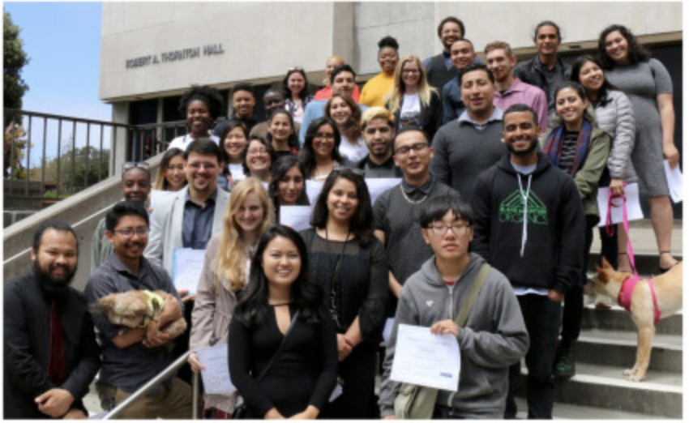

PINC Summer Program FAQ

Do I need programming and/or research experience to join the PINC Summer Program?
No! Some participants may have experience, but the program is intended for fresh students as well.
What happens once the PINC Summer Program is over?
After the end of the program, interested students will be supported to join labs and encouraged to take classes in the PINC minor.
What’s the time commitment?
Participants will meet in their teams for 10 hours/week. There will be a few different options available for the hours, but they will be scheduled between 9am and 5pm Monday-Friday.
When will the program happen?
PINC Summer Program is a nine week program in June and July. The program will culminate in a research presentation and celebration.
How much does the PINC Summer Program cost for participants?
The PINC Summer Program is free!
Is there a stipend for participants?
With support from Genentech, in 2020 students received stipends.
How do I apply?
Applications will open in March every year. Stay tuned! Sign up here to get on an email announcement list!